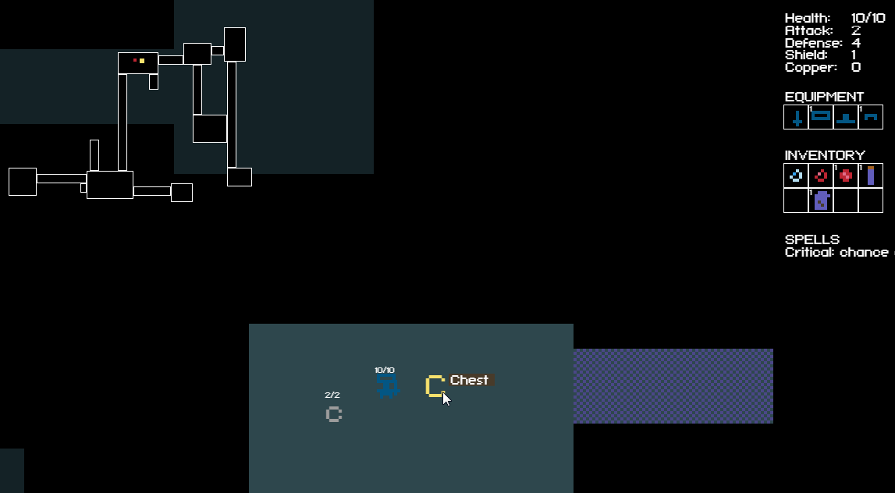
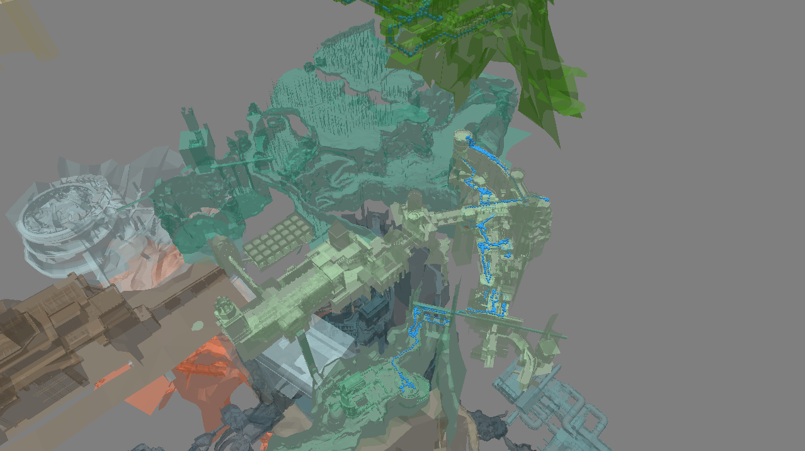
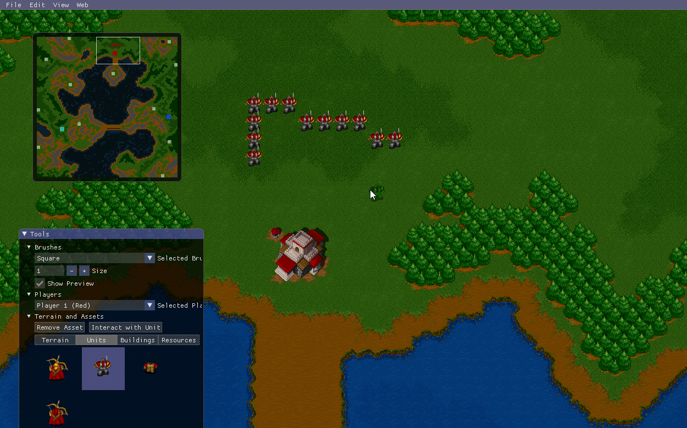
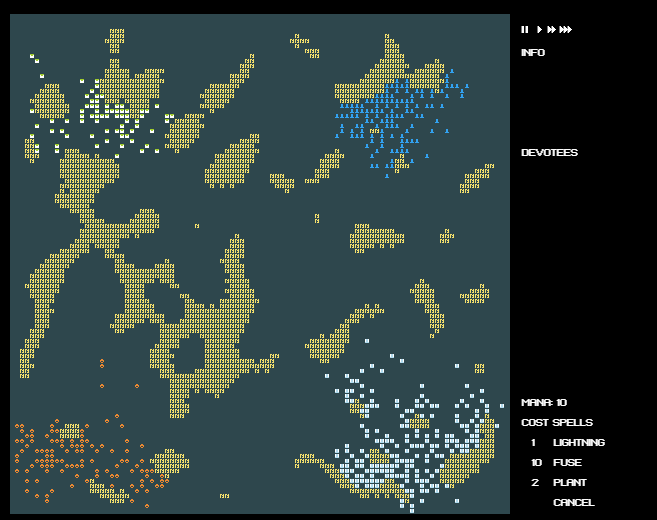
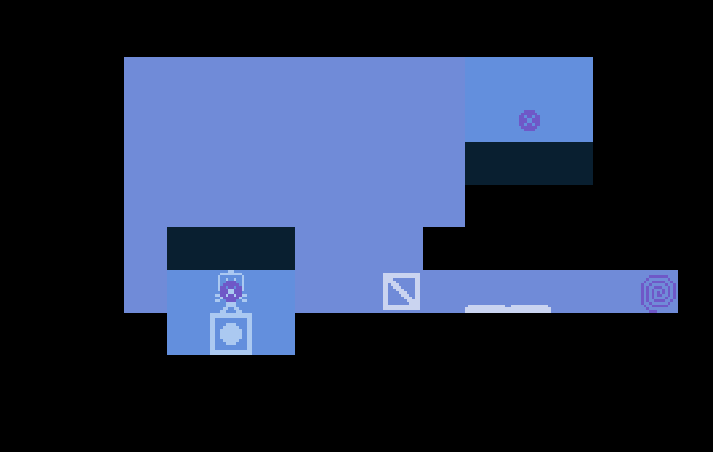
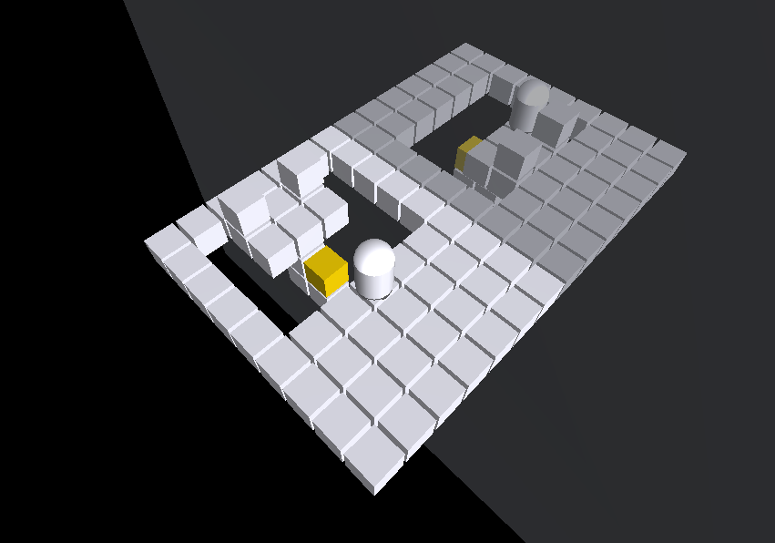
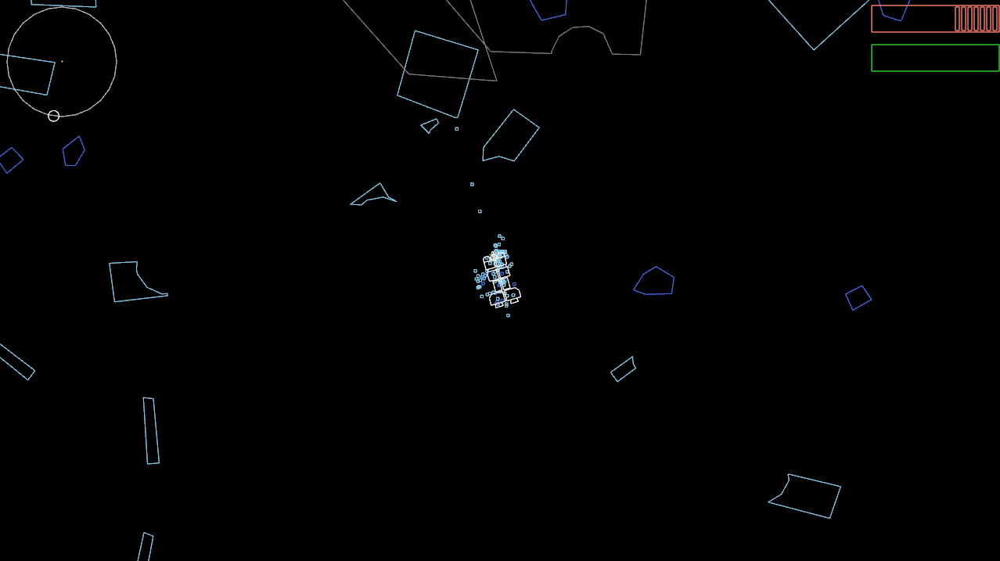
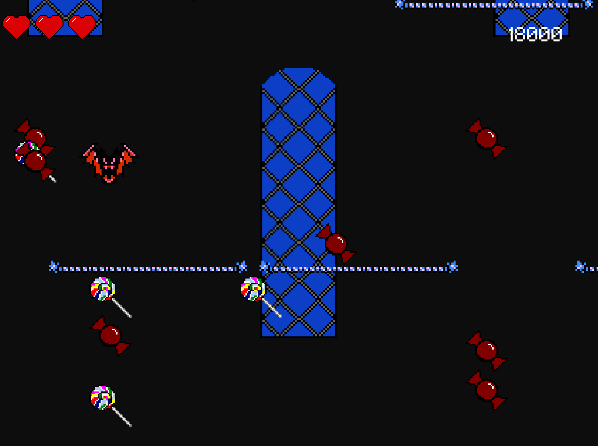
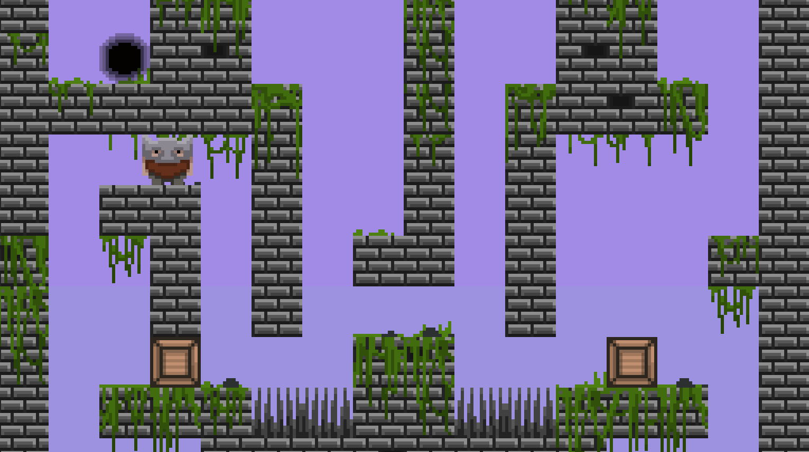

2019, Haxe
Procedurally generated dungeon crawler. Uses a custom ECS which worked very well for this game because it made it easy to make diverse entity types and experiment during development.

2019, C++, OpenGL
Composed of two parts: position recorder and playback program.
The recorder uses Windows API to read memory of Dark Souls to get position coordinates, then writes them to a text file.
The playback program reads in the text file and renders the positions on a 3d map of Dark Souls. You can fly around and look at the player's route through the game in real-time.

2018, C++, OpenGL, Dear ImGui
Quarter long school project with a team of 8. Runs on Windows, Mac and Linux. My work on this project included graphics programming, tile placement and many other features.

2016, Haxe
God simulator + cellular automata. Made for Procjam. Cellular automata live on their own but you can also interact with them by using spells.

2016, Haxe
Puzzle game. Main mechanic is placing a pair of portals which swap 3x3 regions of the playfield. Used an automatic solver to test levels while designing them.

2016, Kotlin, Libgdx, Bullet
3D puzzle game about mirroring, controlling multiple actors in the world at the same time.

2015, Java, Libgdx, Box2D
Top-down shooter. Mine asteroids and upgrade your ship. Features a deformation system for asteroids, which required polygon shape processing, scissoring and other fun stuff.

2015, Java, Libgdx
Arcade style game. You play as a bat which can flap and has to navigate a scrolling maze of obstacles while collecting candy.

2015, Java, Libgdx
2D puzzle platformer made together with a friend.